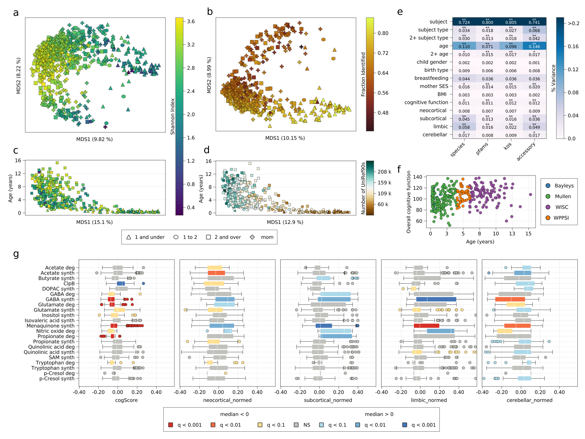
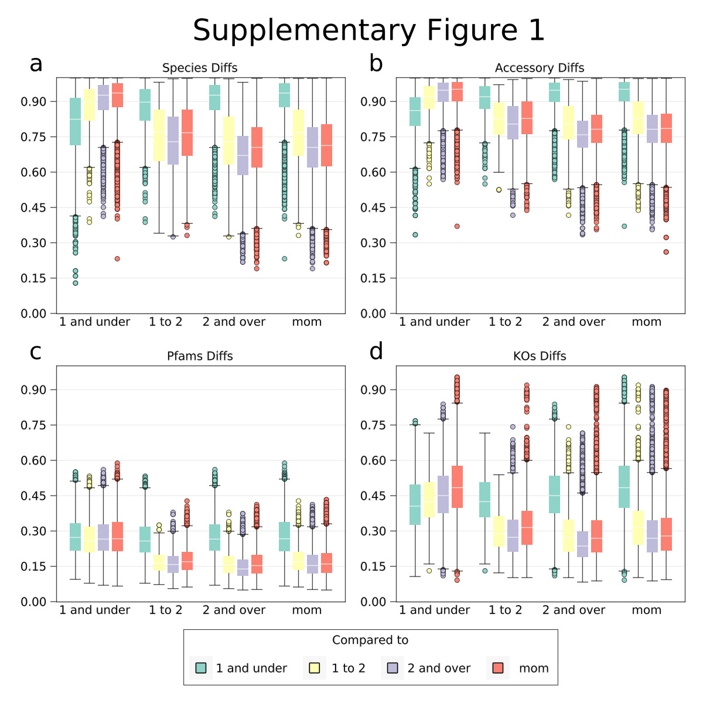
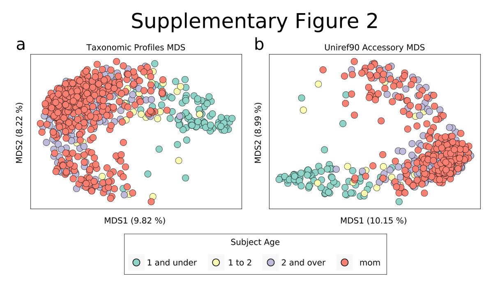
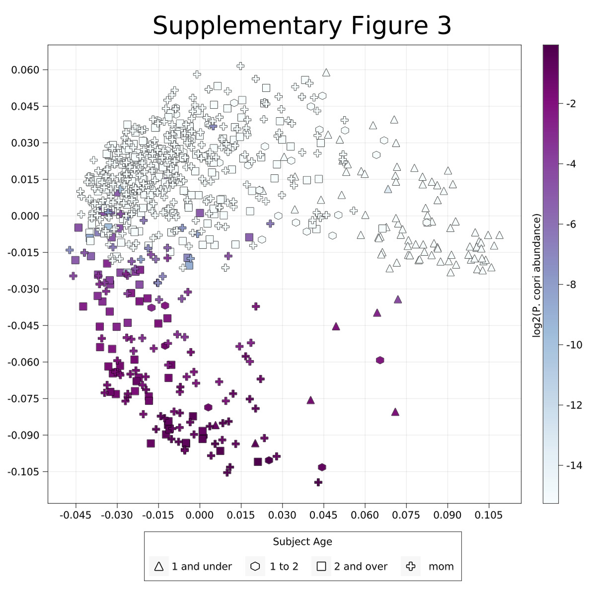
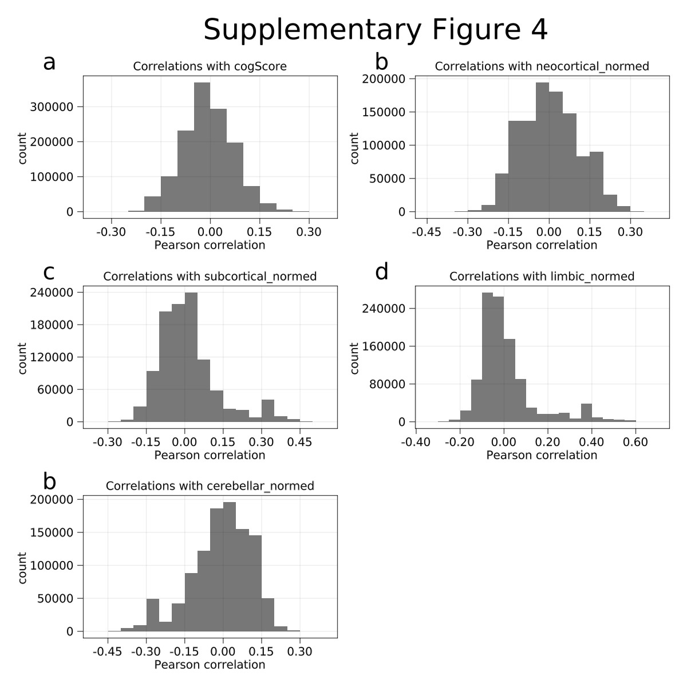

Muriel M.K. Bruchhage 0000-0001-9637-0951
Advanced Baby Imaging Lab, Hasbro Children’s Hospital, Rhode Island Hospital, Providence, RI, 02903, USA
Sophie Rowland
Department of Biological Sciences, Wellesley College, Wellesley, MA, 02481, USA
Lexie Volpe
Advanced Baby Imaging Lab, Hasbro Children’s Hospital, Rhode Island Hospital, Providence, RI, 02903, USA
Kellyn Dyer
Advanced Baby Imaging Lab, Hasbro Children’s Hospital, Rhode Island Hospital, Providence, RI, 02903, USA
RESONANCE Consortium
Viren D’Sa
Advanced Baby Imaging Lab, Hasbro Children’s Hospital, Rhode Island Hospital, Providence, RI, 02903, USA; Department of Pediatrics, Warren Alpert Medical School at Brown University, Providence, RI, 02912, USA
Curtis Huttenhower 0000-0002-1110-0096
Department of Biostatistics, Harvard T. H. Chan School of Public Health, Boston, MA, USA
Sean C.L. Deoni
Advanced Baby Imaging Lab, Hasbro Children’s Hospital, Rhode Island Hospital, Providence, RI, 02903, USA; Department of Pediatrics, Warren Alpert Medical School at Brown University, Providence, RI, 02912, USA; Department of Radiology, Warren Alpert Medical School at Brown University, Providence, RI, 02912, USA; Maternal, Newborn, and Child Health Discovery & Tools, Bill & Melinda Gates Foundation; Seattle WA, USA
· Funded by [‘NIH UH3 ODD023313’, ‘NIH R01 MH087510’]
Vanja Klepac-Ceraj 0000-0001-5387-5706
Department of Biological Sciences, Wellesley College, Wellesley, MA, 02481, USA
Abstract
The gastrointestinal tract and nervous system are intricately linked,
and neuroactive compounds in the gut
may shape the developing brain.
In this cross-sectional study of over 300 children,
we find that the abundance of microbial genes for the metabolism of
GABA, glutamate, and other neuroactive molecules in the gut
are associated with differences
in the development of diverse brain regions
and overall cognitive ability.
Results
Both the brain and microbiome of humans
develop rapidly in the first years of life,
enabling extensive signaling between the gut
and central nervous system (dubbed the “gut-brain axis”
1,2).
While emerging evidence implicates gut microorganisms
and microbiota composition
and cognitive outcomes in neurodevelopmental disorders (e.g., autism),
the role of the gut microbial metabolism on typical neurodevelopment
has not been explored in detail.
To examine the relationships
between early childhood gut microbiome and neurocognitive development,
we collected stool samples from
251 expectant mothers and
313 children
enrolled in the RESONANCE study of child development -
part of the NIH Environmental Influences on Child Health Outcomes (ECHO) Initiative
(Table 1).
RESONANCE is a longitudinal observational study
of healthy and neurotypical brain development
that spans the fetal and infant to adolescent life stages,
combining neuroimaging (magnetic resonance imaging, MRI),
neurocognitive assessments,
bio-specimen analyses,
and rich demographic, socioeconomic, family and medical history information
(Supplementary Figure 1 2).
Table 1 - Baseline characteristics of ECHO RESONANCE participants
metadatum
value
All samples (n)
802
Total subjects (n)
561
Pregnant women (n)
251
Kids (n)
310
Kids under 1yo (n)
81
Kids over 2yo (n)
200
Kids with high resolution scan (n)
141
Kids with cognitive function score (n)
263
Kids with both (n)
133
Non-white kids (%)
40.19
Mixed race kids (%)
23.49
Age in years (mean, SD)
4.27, 3.58
BMI (mean, SD)
16.66, 2.68
Maternal SES (mean, SD)
51.68, 10.86
As an initial characterization step,
we used shotgun metagenomic sequencing
to generate taxonomic and functional profiles
for each of our maternal and child fecal samples.
Participant age was the greatest driver
of both taxonomic and functional diversity,
as expected (Figure 1 a, b).
Children under one year of age
formed a distinct cluster from older children,
characterized by high aerobe load and low alpha (within-sample) diversity
(Figure 1 b, Supplementary Figure 1 2),
and samples from children over two years old
were similar to maternal samples
(Figure 1 a, c, Supplementary Figure 1 2).
As in previous adult and infant cohorts,
functional beta diversity was generally lower than taxonomic diversity
(Supplementary Figure 1 2),
suggesting that healthy guts select for similar gene functions
even when different species contribute those functions.
However,
this interpretation may be complicated
by the fact that as many as 50% of sequencing reads in some samples
are not mapped to any of the reference genes used,
and are thus unclassified (Figure 1 b).
Interestingly,
though children under 1 tended to have substantially fewer species
and, therefore,
fewer total genes
(Figure 1 d, right),
those genes tended to be better characterized
(Figure 1 b, d)5.
Consistent with previous studies
of adult cohorts from industrialized countries4,
another major driver of variation visible from principal coordinates analysis
was the presence of Prevotella copri
(Supplementary Figure 3 4).
Like samples from very young children,
samples with P.
copri had reduced diversity
compared with samples from older children and pregnant mothers without P.
copri
(Figure 1 a, Supplementary Figure 3 4).
Overall,
these results are consistent with prior studies
of adult and childhood gut microbiomes.
To assess the potential role of the microbiome
in these neurocognitive processes,
child stool samples were collected
alongside MRI and age-appropriate neurocognitive evaluations
(Figure 1 f).
Throughout childhood,
a child’s brain undergoes remarkable
anatomical, microstructural, organization, and functional
change.
By age 5,
a child’s brain has reached >85% of its adult size,
has achieved near-adult levels of myelination,
and the pattern of axonal connections has been established
6.
Measures of overall cognitive ability
(e.g., intelligence quotient, IQ)
7,8,
MRI measures of cortical volume and morphometry,
as well as other potentially relevant clinical metadata,
were compared to taxonomic and functional profile dissimilarity
by PERMANOVA
9,10.
Consistent with previous studies,
inter-individual variation accounted for the majority of variation
in microbial taxonomic and functional profiles
([79%, 77%], q < 0.001)
(Figure 1 e, Supplementary Table 1).
Subject type (child or mother)
accounted for a large amount of variation
(4-6% q < 0.001),
but this effect dropped to 2%
when children under 2 years of age were excluded,
suggesting that age, rather than subject type,
is actually responsible for driving the taxonomic and functional variation.
Among children’s samples,
age accounted for over 20% of variation
in both taxonomic and functional profiles,
but this effect also largely disappeared
when children under 2 were excluded
(Figure 1 e, Supplementary Table 1),
suggesting that the age effect
is primarily driven by the enormous changes in the microbiome
over the first year.
Microbiome taxonomic and functional variation
was also associated with moderate but significant differences
in several neurocognitive measures, including
age-appropriate measures of cognitive ability
([2.04%, 2.08%], q < 0.01, N=263).
We also found significant associations
between regional brain volumes
and microbial taxonomic and functional variation,
including the sizes of the cerebellum
([3.63%, 2.82%], q < 0.01),
the subcortex
([3.64% 5.42%], q < [0.01, 0.001]),
neocortex
([1.95% 1.1%], q < [0.01, NS]),
and limbic regions
([4.31% 5.9%], q < [0.01, 0.001])
(N = 141 for all high resolution scans)
even after controlling for the effect of age on brain volume.
These results suggest
that there is a strong relationship
between the gut microbiome and neurocognitive development
(Figure 1 e).
Though the direction of causality cannot be determined,
experimental models of brain development neurological disorders
have demonstrated that microbes in the intestine
may have causal effects on the functioning of the central nervous system
11–14.
To investigate potential mechanisms
through which the gut microbiome might affect
neurostructural and neurocognitive development
in infants and young children,
we focused on a group of microbial genes with neuroactive potential
identified by Valles-Colomer et al.
15
which code for enzymes that metabolize neuroactive compounds.
We analyzed the association of each of these gene sets
with our neurocognitive measures
using feature set enrichment analysis (FSEA)
16,17
(Figure 1 g, Supplementary Table 2).
Briefly, we calculated the Pearson correlation
between the relative abundance of all identified UniRef90 gene families
with each neurocognitive measure,
then calculated the Mann-Whitney U statistic
for each potentially neuroactive subset.
Using this analysis,
we observed that catabolic and anabolic pathways
for several molecules known to be important in the developing brain
were significantly associated
with overall cognitive function scores
and the size of brain subregions.
In particular,
microbial genes for GABA synthesis
were positively associated with
neocortical (q < 0.01, Figure 1 g, Supplementary Table 2),
subcortical (q < 0.01),
and limbic (q < 0.001) volume,
and negatively associated with
cerebellar volume (q < 0.01)
and overall cognitive function (q < 1e-5).
Interestingly,
GABA degradation genes
were also positively associated with
the size of the subcortex
and negatively associated with
cognitive function (q < 0.05).
This may be due to higher GABA synthesis
selecting for the ability to catabolize this molecule,
making it difficult to assess how actual GABA concentrations in the gut
are associated with brain development.
Unlike the metabolism of GABA,
glutamate synthesis and degradation genes
have an inverse relationship
(Figure 1 g, Supplementary Table 2).
The glutamate degradation gene set
was negatively associated with
cognitive function (q < 1e-4)
and cerebellar volume (q < 0.05)
and positively associated with
the size of the neocortex (q < 0.05),
while glutamate synthesis
was marginally negatively associated with
overall cognitive function
and the size of the neocortex,
while positively associated with
the size of the cerebellum (q < 0.05).
However,
it remains difficult to predict
how gut concentrations of glutamate
might be related to microbial metabolism;
while it might be intuitive to expect
that higher glutamate synthesis and lower glutamate degradation
would lead to higher gut concentrations of glutamate,
it might also be the case that lower glutamate concentrations
select for microbes that can synthesize it
and against those that break it down.
Glutamate is also far more prevalent in the diet
and can be rapidly metabolized by gut epithelial cells,
making the relationship between gut concentrations
and microbial metabolism even more complex
18.
Understanding the relationship of intestinal GABA and glutamate metabolism
may be particularly important to understanding the role of the gut microbiome
in early childhood cognitive development.
Together,
GABA and glutamate make up the main cerebellar output neurons
19,20
with inhibitory GABAergic cells
being widely distributed in the cerebellum projecting out of the cerebellar cortex
and excitatory glutamatergic neurons receiving afferent input.
The cerebellum,
coined ‘the little brain’,
is one of the earliest brain regions to develop
6,21,
but continues to grow into adulthood
22,
making it especially vulnerable for disorder and disease
23.
Specifically,
neurodevelopmental disorders, such as autism spectrum disorder,
have been associated with an imbalance of the inhibitory/ excitatory system
regulated by glutamate and GABA,
with recent evidence suggesting
an impaired conversion of glutamate to GABA in the disorder
24.
This is the first look at an ongoing study
of child neurocognitive and microbiome development.
Using cross-sectional data,
we have shown that differences
in gut microbial taxa and genes
are associated with the structural development of the brain
and with cognitive development.
In addition,
we have shown that particular microbial gene sets with neuroactive potential
are associated with neurocognitive development,
thus perhaps playing a direct role
in the gut luminal exposure of children to neuroactive metabolites.
This study is ongoing,
and we are collecting additional clinical data
such as participant genetic profiles,
lead exposure,
air quality data,
and more
to understand how
the environment, microbiome, and biological development
interact to shape neurocognition.
Future studies
assessing gut metabolite pools
combined with MR spectroscopic methods
to quantify concentrations of neurotransmitters such as GABA and glutamate
in the brain,
as well humanized mouse models and longitudinal human data,
will provide further insight
into the interactions of microbial metabolism
and neurocognitive development.
As we continue to follow these subjects,
we will be able to identify how early life microbial exposures,
including exposures of mothers in utero,
might affect future neurocognitive outcomes.
Figure 1:The gut microbiome of children is associated with neurocognition.a, Principal coordinates analysis (PCoA) for all subjects
based on species-level Bray-Curtis dissimilarity;
most variation is driven by age and the presence of Prevotella(3,4).
b, PCoA for all subjects
based on Bray-Curtis dissimilarity in functional profiles
(UniRef90 accessory genes)
after removing gene families that were present in >90% of subjects
in a given age group;
variation driven by similar effects as for taxonomic profiles.
c, First principle coordinate axis of species PCoA for child samples vs age;
younger children cluster away from older children,
and are lower in diversity.
d, First principle coordinate axis of accessory gene family PCoA
for child samples vs age;
functional diversity increases with age.
e, PERMANOVA analysis for selected subject metadata
and Bray-Curtis dissimilarity for species-level taxonomic profiles
or functional profiles
using Kegg-Orthology (KO),
Pfams or accessory UniRef90s;
subject and subject type include all subjects,
2+ includes only children over 2 years old,
others include all children for which the measure was available;
stars indicate significance after Benjamini-Hochberg FDR correction
(* <0.1, ** < 0.01, *** < 0.001).
f, Child age vs normalized cognitive function score;
age-appropriate assessments
achieve similar score distributions for their age groups.
g, FSEA analysis for gene sets with neuroactive potential
(see Methods).
Figure 2:Supplementary Figure 1
Pairwise Bray-Curtis dissimilarities
for each age group for
species (a),
accessory UniRef90s (b),
Pfams (c),
and KOs (d).
Figure 3:Supplementary Figure 2
Accompanies Figure 1a-d.
Taxonomic (a) and functional (b) profile PCoAs,
colored by age group.
Figure 4:Supplementary Figure 3
Accompanies Figure 1a.
Taxonomic profile colored by the relative abundance of Prevotella copri.
Figure 5:Supplementary Figure 4
Accompanies Figure 1g.
Distributions of the correlations of neurocognitive measures
with all UniRef90 gene families.
Materials and methods
Cohort description
Data used in this study
were drawn from the ongoing longitudinal RESONANCE study
of healthy and neurotypical brain and cognitive development,
based at Brown University in Providence, RI, USA.
From the RESONANCE cohort,
310 typically-developing children and
251 healthy pregnant women were selected for analysis in this study.
General participant demographics are provided in Table 1,
with children being representative of the RI population.
As a broad background,
children in the BAMBAM cohort were born full-term
(>37 weeks gestation)
with height and weight average for gestational age,
and from uncomplicated singleton pregnancies.
Children with known major risk factors for developmental abnormalities at enrolment
were excluded.
In addition to screening at the time of enrollment,
on-going screening for worrisome behaviors
using validated tools were performed
to identify at-risk children and remove them from subsequent analysis.
Additional data collection
Demographic and other non-biospecimen data such as
race and ethnicity,
parental education and occupation,
feeding behavior (breast- and formula-feeding),
and child weight and height,
were collected through questionnaires or direct examination as appropriate.
All data were collected at every assessment visit,
scheduled on the same day of the MRI scan
or within 2 weeks of the scan date.
Approval for human patient research
All procedures for this study were approved
by the local institutional review board at Rhode Island Hospital,
and all experiments adhered to the regulation of the review board.
Written informed consent was obtained
from all parents or legal guardians of enrolled participants.
Stool sample collection and handling
Stool samples
(n=802)
were collected by parents
in OMR-200 tubes (OMNIgene GUT, DNA Genotek, Ottawa, Ontario, Canada),
stored on ice, and brought within 24 hrs to the lab in RI
where they were immediately frozen at -80˚C.
Stool samples were not collected
if the infant had taken antibiotics within the last two weeks.
DNA extraction and sequencing of metagenomes
All processing of the samples was done at Wellesley College (Wellesley, MA).
Nucleic acids were extracted from stool samples using the
RNeasy PowerMicrobiome kit
automated on the QIAcube (Qiagen, Germantown, MD),
excluding the DNA degradation steps.
Extracted DNA was sequenced at the Integrated Microbiome Resource (IMR, Dalhousie University, NS, Canada).
Shotgun metagenomic sequencing was performed on all samples.
A pooled library (max 96 samples per run)
was prepared using the Illumina Nextera Flex Kit for MiSeq and NextSeq
from 1 ng of each sample.
Samples were then pooled onto a plate and sequenced on
the Illumina NextSeq 550 platform
using 150+150 bp paired-end “high output” chemistry,
generating ~400 million raw reads and ~120 Gb of sequence.
Computational methods, statistical analyses and data availability
Raw and processed data (excluding PHI)
is available through SRA and Zenodo.org
25.
All code used for statistical and other analysis
was version controlled and is available on github
26.
Software packages included
vegan (R package) for PERMANOVAs,
MultivariateStats.jl for MDS analysis,
HypothesisTests.jl for Mann-Whitney U tests (used in FSEA analysis),
MultipleTesting.jl for false discovery rate correction,
and Makie.jl for plotting.
Metagenomic data were analyzed using the bioBakery
27
family of tools with default parameters.
Briefly,
KneadData (v0.7.1) was used to trim and filter raw sequence reads
and to separate human reads from bacterial sequences.
Samples that passed quality control
were taxonomically profiled to the species level using
MetaPhlAn2 (v2.7.7)
and functionally profiled by
HUMAnN2 (v0.11.1).
MRI Acquisition and data processing
Structural T1-weighted MRI scans
were acquired on a 3T Siemens Trio scanner with a 12-channel head RF array,
preprocessed using a multistep registration procedure.
Cortical reconstruction and volumetric segmentation
was performed with the Freesurfer image analysis suite,
which is documented and freely available for download online (http://surfer.nmr.mgh.harvard.edu/).
Brain regions were divided into
neocortex, cerebellum, limbic and subcortical
regions (for more details on acquisition and processing, see extended methods).
Neurocognitive assessments
Overall cognitive function was defined by the Early Learning Composite
as assessed via the Mullen Scales of Early Learning (MSEL)
7,
a standardized and population normed tool
for assessing fine and gross motor,
expressive and receptive language,
and visual reception functioning
in children from birth through 68 months of age.
The third edition of the Bayley Scales of Infant and Toddler Development
(Bayley’s III) is a standard series of measures
primarily to assess the development of infants and toddlers,
ranging from 1 to 42 months of age
28.
The Wechsler Intelligence Quotient for Children (WISC)
29
is an individually administered standard intelligence test
for children aged 6 to 16 years.
It derives a full scale intelligence quotient (IQ) score,
which we used to assess overall cognitive functioning.
The fourth edition of the Wechsler Preschool and Primary Scale of Intelligence (WPPSI-IV)
29
is an individually administered standard intelligence test
for children aged 2 years 6 months to 7 years 7 months,
trying to meet the increasing need for the assessment of preschoolers.
Just as the WISC,
it derives a full scale IQ score,
which we used to assess overall cognitive functioning.
Acknowledgments
The authors would like to thank
Christopher Loiselle and Jennifer Beauchemin
for assistance with biospecimen and metadata collection,
Nisreen Abo-Sido for substantial sample preparation and DNA extraction,
and Julius Krumbiegel for extensive help with figure generation code.
This work was supported by the National Institutes of Health (UH3 ODD023313 and R01 MH087510).
References
Extended Methods
Exclusion criteria
These included: in utero alcohol, cigarette or illicit substance exposure; Preterm (<37wks gestation) birth; small for gestational age or less than 1500g; fetal ultrasound abnormalities; preeclampsia, high blood pressure, or gestational diabetes; 5 minute APGAR scores <8; NCU admission; neurological disorder (e.g., head injury resulting in loss of consciousness, epilepsy); and psychiatric or learning disorder in the infant, parents or siblings (including maternal depression requiring medication in the year prior to pregnancy)
MRI preprocessing
T1-weighted magnetization-prepared rapid acquisition gradient echo anatomical data were acquired with an isotropic voxel volume of 1.2x1.2x1.2mm3, resampled to 0.9 x 0,9 x 0.9mm3 Sequence specific parameters were: TE=6.9ms; TR=16ms; inversion preparation time=950ms; flip angle=15 degrees; BW=450Hz/Pixel. The acquisition matrix and field of view were varied according to child head size in order to maintain a constant voxel volume and spatial resolution across all ages30. Using a multistep registration procedure31, a series of study- and age-specific anatomical T1-weighted templates were created corresponding to 6, 9, 12, 15, 18, 21, 24, and 27 month ages. At least 10 boys and 10 girls were included in each template. An overall study template was then created from these age templates, which was aligned to the MNI152 template32. Each child’s anatomical T1-weighted image was transformed into MNI space by first aligning to their age-appropriate template and then applying the pre-computed transformation to MNI space, with the calculated individual forward and reverse transformations saved and used for the volumetric analysis described below. All template creation and image alignment was performed using a 3D nonlinear approach (ANTS33) with cross-correlation and mutual information cost functions.
MRI processing
MR data processing included motion correction and averaging34 of volumetric T1 weighted images, removal of non-brain tissue using a hybrid watershed/surface deformation procedure35, automated Talairach transformation, segmentation of the subcortical white matter and deep gray matter volumetric structures36,37intensity normalization38, tessellation of the gray matter white matter boundary, automated topology correction39,40, and surface deformation following intensity gradients to optimally place the gray/white and gray/cerebrospinal fluid borders at the location where the greatest shift in intensity defines the transition to the other tissue class41,41,42 (Dale and Sereno, 1993). Once the cortical models were complete, a number of deformable procedures can be performed for further data processing and analysis including surface inflation43, registration to a spherical atlas which is based on individual cortical folding patterns to match cortical geometry across subjects44, parcellation of the cerebral cortex into units with respect to gyral and sulcal structure45,46, and creation of a variety of surface based data including maps of curvature and sulcal depth. This method uses both intensity and continuity information from the entire three dimensional MR volume in segmentation and deformation procedures to produce representations of cortical thickness, calculated as the closest distance from the gray/white boundary to the gray/CSF boundary at each vertex on the tessellated surface42. The maps are created using spatial intensity gradients across tissue classes and are therefore not simply reliant on absolute signal intensity. The maps produced are not restricted to the voxel resolution of the original data thus are capable of detecting submillimeter differences between groups. Procedures for the measurement of cortical thickness have been validated against histological analysis47 and manual measurements48,49. Freesurfer morphometric procedures have been demonstrated to show good test-retest reliability across scanner manufacturers and across field strengths50,51.
Brain region definition
Neocortex: anterior cingulate, middle frontal, cuneus, entorhinal, fusiform, inferior parietal, inferior temporal, isthmus cingulate, lateral occipital, lateral orbitofrontal, lingual, medial orbitofrontal, middle temporal, parahippocampal, paracentral, pars opercularis, pars orbitalis, pars triangularis, pericalcarine, postcentral, posterior cingulate, precentral, precuneus, rostral anterior cingulate, rostral middle frontal, superior frontal, superior parietal, superior temporal, supramarginal, frontal pole, temporal pole, transverse temporal
Limbic: entorhinal, lateral orbitofrontal, medial orbitofrontal, rostral anterior cingulate, thalamus, hippocampus, amygdala
Subcortex: thalamus, caudate, putamen, pallidum, hippocampus, amygdala, insula, operculum
Cerebellum: cerebellum cortex
Note: some regions were ambiguous and included in measures of multiple regions. The sum of voxel volumes for all subregions were normalized to total brain volume before subsequent analyses.
Computational and Statistical analysis
Shotgun metagenomics processing
Metagenomic sequence reads were analyzed using the bioBakery27 family of tools with default parameters. First, raw sequence data were run through KneadData (v0.7.1) was used to trim and filter raw sequence reads and to separate human reads from bacterial sequences. Second, reads that passed quality control were taxonomically profiled using MetaPhlAn2 (v2.7.7), generating taxon abundance tables. Species-level rows were collected and normalized using total sum scaling (TSS).
Taxonomic profiles and QC-passed reads were functionally profiled using HUMAnN2 (v0.11.1) to generate gene families functional profiles (UniRef90). Gene families were regrouped into Pfam and KO using the humann2_regroup_tables script. All functional profiles were TSS normalized using the humann2_renorm_tables script. UNMAPPED and UNGROUPED rows were then removed prior to downstream analyses. For “accessory” genes analyses, samples were grouped by age (kids under 1 year old, kids over 2 years old, and pregnant women), and gene families that were present in over 90% of samples within a given age group were excluded.
Principal coordinates analysis (PCoA)
Pairwise Bray-Curtis dissimilarities were calculated for all samples using the Distances.jl package. PCoAs were performed by fitting the resulting distance matrices using classical multidimensional scaling (MDS) from the MultivariateStats.jl package. Percent variance explained for each axis is the relative proportion of the eigenvalue for that axis’ among all positive eigenvalues.
PERMANOVA
PERMANOVA fitting was performed using the adonis function from the vegan R package. Pairwise distance matrices were computed as described above. Each PERMANOVA was computed separately, calculating the percent variance that may be explained by a given variable, and many use different subsets of subjects, so results may not add to 100%.
In each analysis, only samples for which data was available were used. “Subject” used all samples (n=802). “Subject Type” refers to pregnant woman vs. child, and included only the first sample contributed by each individual (n=561). “Age” (corrected for gestational age, n=310), “child gender“ (n=310), “birth type” (cesarean vs vaginal, n=287), “breastfeeding” (exclusive breastfeeding, exclusive formula, or mixed, n=71), “BMI” (calculated as (weight in lbs) / (height in inches)2 * 703, n = xx), “mother SES” (composite HHS score including education level and occupation, n=171), and “cognitive function” (n=263) included the first sample for all children for which data were available. “2+ age” and “2+ subject type” were performed as above, but only included children over 2 years old.
Due to the strong effect of age on Brain data from high-resolution MRI (neocortical, limbic, subcortical, cerebellar, n=141), we used multivariate PERMANOVA for these measures, where variation due to age was assessed first, and the reported value is the % variarance remaining attributable to each brain region.
Feature set enrichment analysis (FSEA)
Potentially neuroactive microbial gene sets were acquired from supplementary dataset 1 from Valles-Colmer et al.15 KOs from this dataset were mapped to UniRef90s using the mapping files included with HUMAnN2 to generate gene sets. The Pearson correlations for each measure (cognitive function score or brain region) and each UniRef90 gene family found in at least 4 subjects were calculated. As expected, correlations between all gene families and each measure were approximately normally distributed. The Mann-Whitney U test assesses whether a randomly selected value from one population will be greater or less than a randomly selected value from a different population. We performed the Mann-Whitney U test (implemented in the HypothesisTests.jl package) on the correlations of each gene family in a neuroactive gene set against the correlations of all gene families not found in the gene set. P values after BH FDR correction (q value) were used to assess significance.
 0000-0003-3200-7533
·
0000-0003-3200-7533
·  kescobo
·
kescobo
·  kevbonham
kevbonham